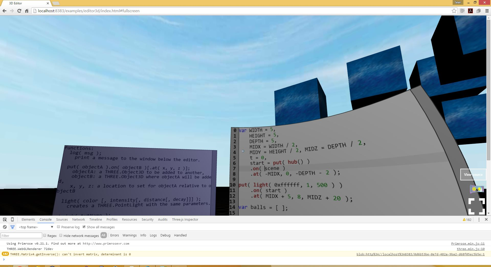
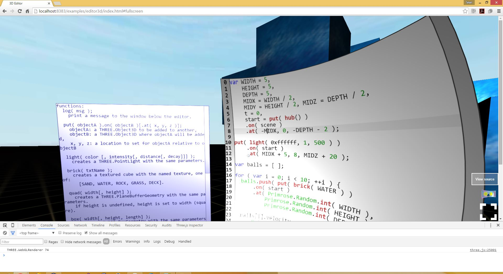
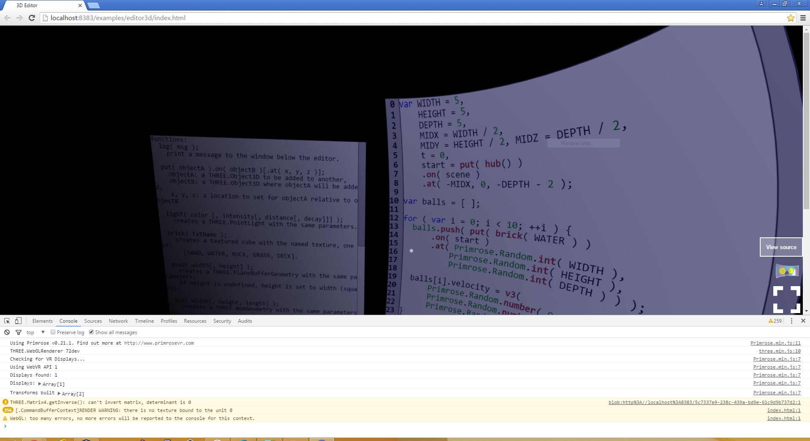
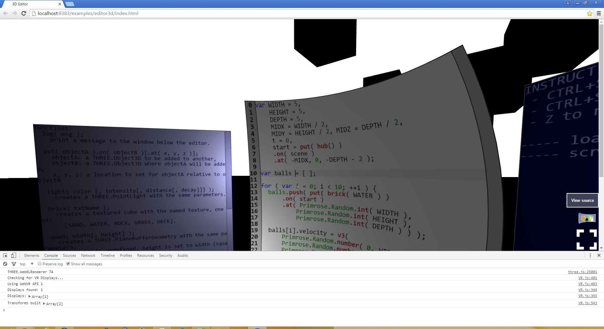

My PC is running Windows 8.1 with an NVidia GTX 980.
This is the demo in question.
This is the expected image. The sky, ground, and blue cubes all have textures loaded from an image file. The text elements have textures built from HTML canvases.
This is the image after the upgrade. Notice the lighting is much "shinier". On the right edge you can see it's also the case for the further-away items.
There is an additional problem that I'm trying to work out, where Chromium 51 won't load my textures.
Yet somehow, r74 gets that the sky should be brighter than the ground. Very odd. Texture coordinates not set correctly?
